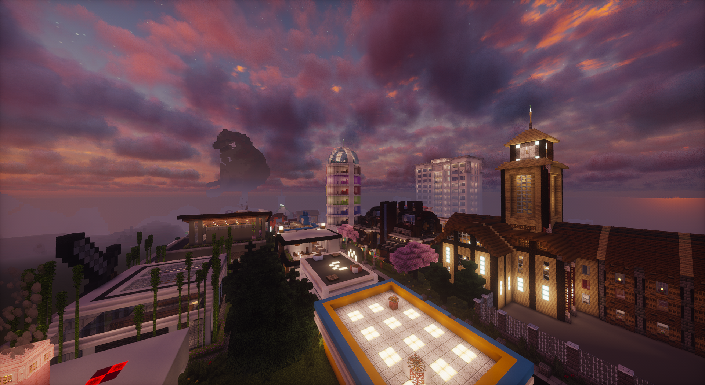
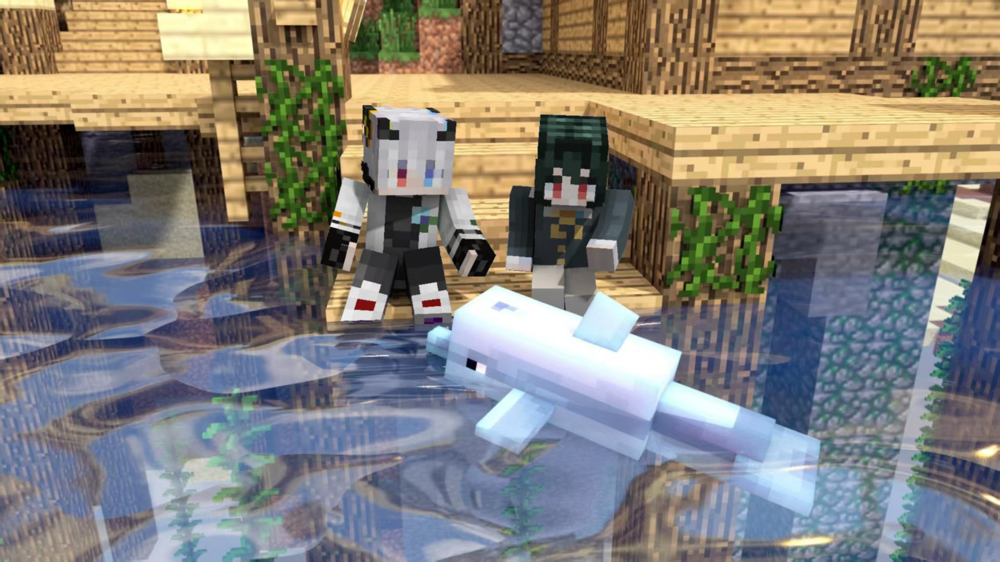
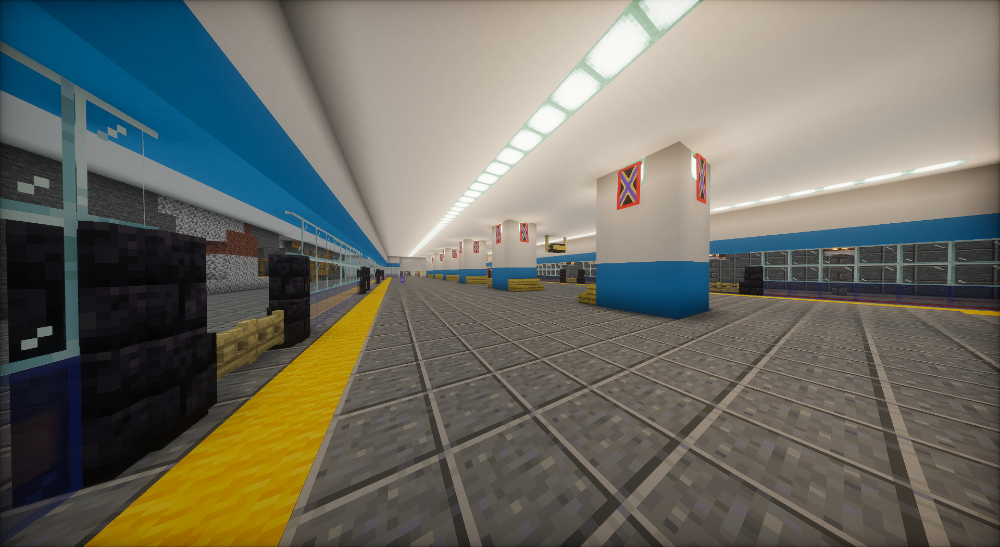
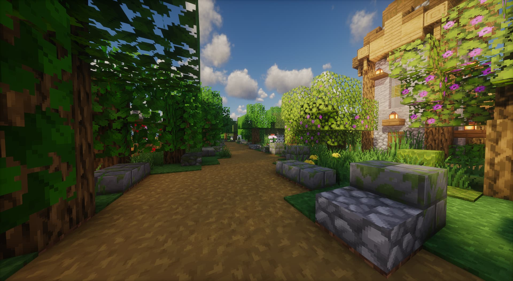
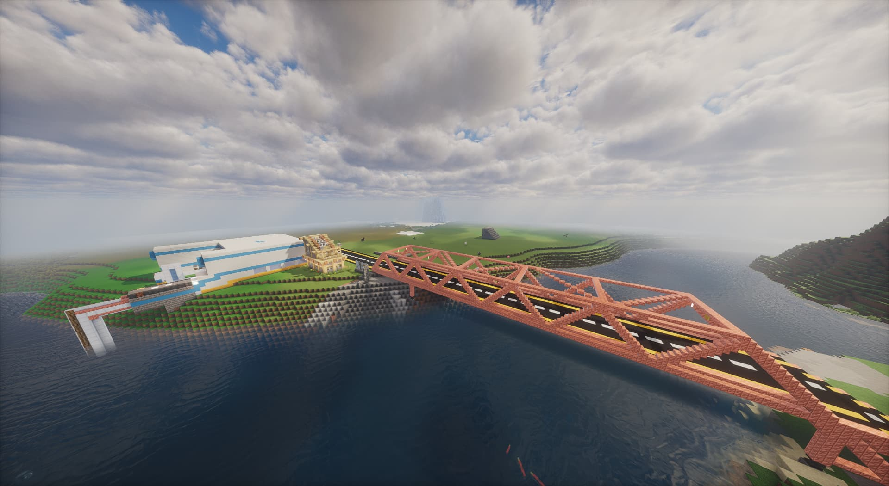

THIS IS OUR STORY
不止于建造，
更是一场共同的探索。
联合实验新区，是我们用方块与热爱慢慢搭建的世界。从最初的小屋，到不断生长的城区，每一条道路、每一栋建筑，都留下伙伴们共同创造的痕迹。
共建、创新、规划、基建、生态、水利、畅想——七个主题，串起这座新区的现在与未来。

JOINT EXPERIMENTAL NEW AREA
共建
每一份热爱，都在这里相遇。从一间小屋到一座城区，一起构思、一起搭建，让每个人的创意成为新区的一部分。
认识建设伙伴
JOINT EXPERIMENTAL NEW AREA
创新
让想象，突破方块的边界。探索新的建筑语言、地形设计与玩法，在一次次尝试中，让这座城市拥有自己的表达。
发现新区影像
JOINT EXPERIMENTAL NEW AREA
规划
把远方，画进今天的蓝图。从全域布局到片区细节，统筹道路、建筑与公共空间，让每一步建设都有方向。
了解分区规划
JOINT EXPERIMENTAL NEW AREA
基建
连接每一处，承载每一天。完善路网、交通枢纽与公共配套，以扎实的基础工程，支撑新区持续生长。
走近工程建设
JOINT EXPERIMENTAL NEW AREA
生态
在城市之间，留一片自然。将绿地、街景与自然空间融入建设，让方块世界也有四季、有呼吸、有可以停留的风景。
漫游新区风光
JOINT EXPERIMENTAL NEW AREA
水利
让水脉，成为城市的脉搏。统筹河道、水系与沿岸空间，让水资源管理、基础工程和滨水景观相互衔接。
了解公共设施
JOINT EXPERIMENTAL NEW AREA
畅想
下一种可能，由我们一起定义。故事仍在继续，蓝图仍在展开。带着新的想法加入我们，一起建造属于未来的联合实验新区。
加入我们的共建THE OFFICIAL FILM
让影像，讲述我们的故事。

六载流光，初心未改。
从搭建一间小小的房屋开始，伙伴们结伴同行，开启了这段漫长的建设征途。虽然建设曾因学业与现实生活而停歇，我们始终带着热忱继续前行。这部宣传片，记录一路成长，也献给每一位共同筑梦的伙伴。
THE JOURNEY SO FAR
一步一步，走到今天。
小人眼镜实验新区成立
建设立项奠基
主城区启动建设
初代行政大楼开工
改称联合实验新区
城区规划初稿完成
主城区启动建设
城区规划初稿完成
三大分区选址收官
规划方案初稿完成
设立建设规划部
新区管理工作逐步统一
大规模扩建
重新规划主城区